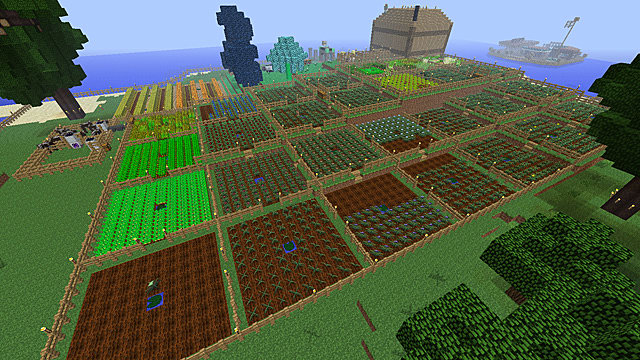

Central Goverment
This is our advanced agriculture farm! Here, we use virtual-reality games to control the robots that plant our crops for us. We have access to any crops, plants, and fruits and vegetables inside our microbiomes all across our cities. This way, we can make any environment to suit a specific crop. Just program the microbiomes to set to a specific environment or climate, and boom! You have any plant or crop you want.
